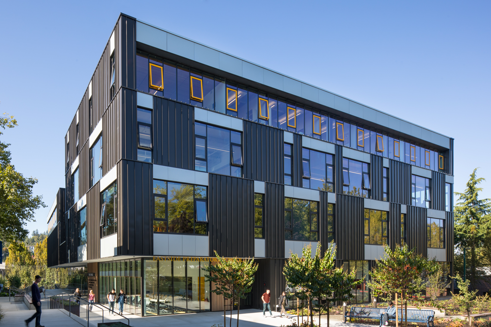

CLASSES

- Science
- • Science has been one of my favorite classes this year, studying the solar system and the laws and rules that it follows. We have learned geology by researching different rock types. That moved into volcanoes, earthquakes, and other geologic fields. I have enjoyed this year and look forward to doing Bio next year and continuing to study the sciences.
- History
- • Looking forward to the year, I had low expectations for my history class. I didn’t think I would enjoy learning about the world's religions, and I had mixed reviews of the course. Contrary to that, I have enjoyed this year of history. I learned more about my own religion and learned a lot about others. So many people have devoted their lives to their faiths, and I enjoyed learning about them.
- Spanish
- • Spanish has definitely been my most challenging subject this year. I struggled earlier, thinking it would be an easier class, and minimal studying would be necessary. I was wrong. After that, I have had to make up a lot of ground to catch up. The workload has ramped up from last year, and I have had difficulty with that. (Right now, I am using this as a study break.) I am glad, however, that I had this class as I have grown a lot in the language, and it has taught me a lot of useful study habits.